May 2022 (version 1.68)
Update 1.68.1: The update addresses these issues.
Downloads: Windows: User System Arm64 | Mac: Universal Intel silicon | Linux: deb rpm tarball Arm snap
Welcome to the May 2022 release of Visual Studio Code. There are many updates in this version that we hope you'll like, some of the key highlights include:
- Configure Display Language - See installed and available Language Packs in their language.
- Problems panel table view - View errors and warnings as a table to quickly filter on their source.
- Deprecated extensions - Learn whether an extension is deprecated or should be replaced.
- Extension sponsorship - Support the developers who build your favorite extensions.
- Hide Explorer files using .gitignore - Reuse your existing
.gitignoreto hide files in the Explorer. - Terminal color and contrast enhancements - Find match background color, min contrast ratio.
- Git branch protection - Branch protection available right inside VS Code.
- TypeScript Go to Source Definition - Jump directly to a symbol's JavaScript implementation.
- VS Code for the Web localization - vscode.dev now matches your chosen browser language.
- Development Container specification - Learn more about the evolving dev container spec.
- Preview: Markdown link validation - Detects broken links to headers, images, and files.
If you'd like to read these release notes online, go to Updates on code.visualstudio.com.
Insiders: Want to try new features as soon as possible? You can download the nightly Insiders build and try the latest updates as soon as they are available.
Workbench
Configure Display Language improvements
The Configure Display Language command has been refreshed to include:
- The name of the language in that language.
- An Available languages section that shows what languages aren't installed on your machine and selecting one will automatically install it and apply that language.
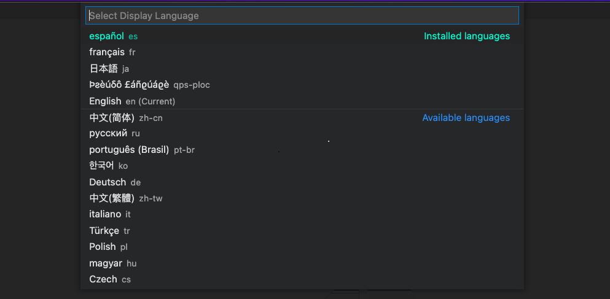
Theme: Panda Theme
This should help with the discovery of available Language Packs. Please let us know what you think!
Problems panel table view
This milestone we added a new capability for users to toggle the view mode of the Problems panel between a tree and a table. Compared to the tree view, the table surfaces the source (language service or extension) of each problem, which allows users to filter the problems by their source.
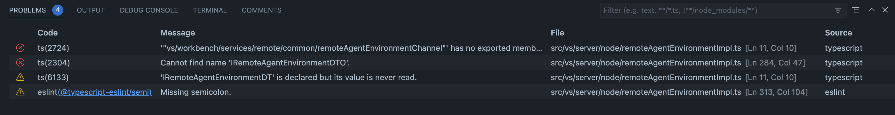
Theme: GitHub Dark Dimmed Theme
You can toggle the view UI with the View as Table/View as Tree button in the upper right of the Problems panel or change the default view mode with the Problems: Default View Mode setting (problems.defaultViewMode)
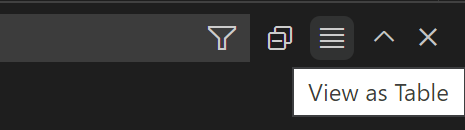
Deprecated extensions
In this milestone, we have added support for deprecated extensions in VS Code. An extension can be simply deprecated or deprecated in favor of another extension or when its functionality is built into VS Code. VS Code will render extensions as deprecated in the Extensions view, as shown below.
A deprecated extension that is no longer being maintained.
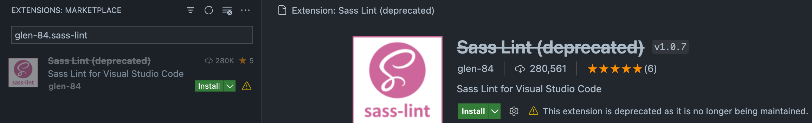
An extension deprecated in favor of another extension. In this case, VS Code does not allow users to install this extension.
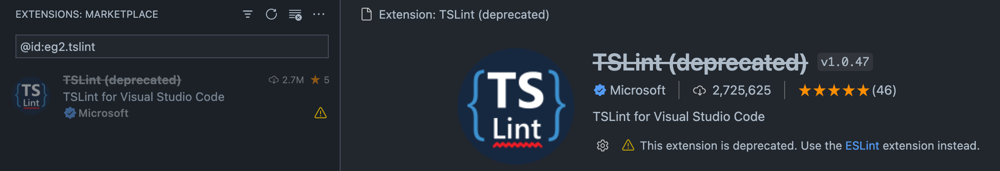
A deprecated extension with its functionality built-in to VS Code that can be enabled by configuring settings.
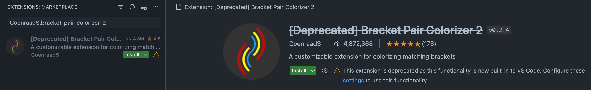
VS Code will not automatically migrate or uninstall a deprecated extension. There will be a Migrate button to guide you to switch over to the recommended extension.
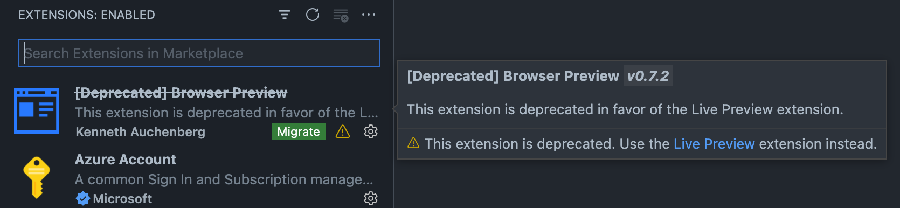
Theme: GitHub Dark Dimmed Theme
Note: The list of deprecated extensions is maintained by the VS Code. If you have an extension that you believe should be deprecated, reach out to us by commenting in this discussion.
Sponsoring extensions
VS Code now allow users to sponsor their favorite extensions. When an extension can be sponsored, VS Code will render a Sponsor button in the Extensions view Details page like below:
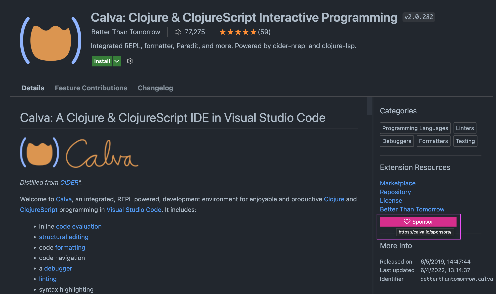
Theme: GitHub Dark Dimmed Theme
The Sponsor button will direct you to the extension's sponsorship URL, where you can provide your support. Refer to Extension sponsorship to learn how to opt into this feature for your extension.
Hide files in Explorer based on .gitignore
The File Explorer now supports parsing and hiding files that are excluded by your .gitignore file. This can be enabled via the Explorer: Exclude Git Ignore (explorer.excludeGitIgnore) setting. This setting works alongside files.exclude to hide unwanted files from the Explorer.
Note: At this time, negated globs such as !package.json are not parseable.
Lock hover position
Some custom hovers are difficult or impossible to mouse over due to the presence of other UI elements (for example, a scroll bar). Holding Alt while a hover is active will now "lock" it, giving it a wider border and preventing mouse movement outside of the hover from hiding it. This is primarily an accessibility feature to make hovers play nicely with screen magnifiers but it is also useful for copying text from hovers. Note that this feature only applies outside of the editor because editor hovers can always be moused over unless specified otherwise via the editor.hover.sticky setting.
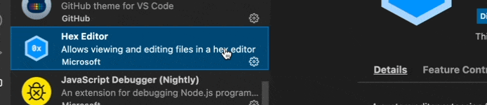
Settings editor improvements
The Settings editor now shows a default value override indicator for language-specific settings. You can view language-specific settings by adding a language filter in the Settings editor search bar, either by typing it out explicitly (@lang:javascript), or by clicking the filter button on the right of the search bar, and selecting the Language option.
When the default value override indicator shows up, it indicates that the default value of the language-specific setting has been overridden by an extension. The indicator also indicates which extension overrode the default value.
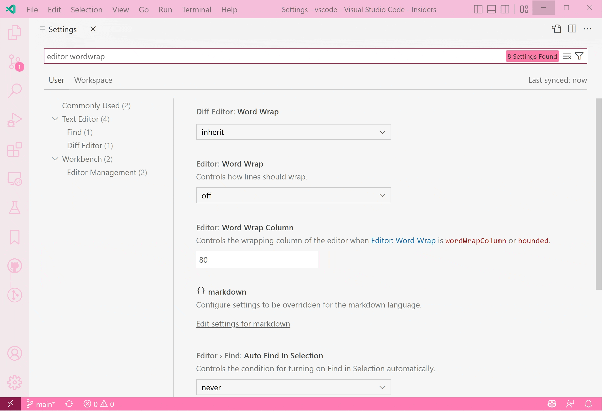
Theme: Light Pink
This iteration also fixes a behavior where some links in the Settings editor were not redirecting properly when there was already a search query in the Settings editor search bar. The links also now have proper styling so that it is clearer when one is hovering over them.
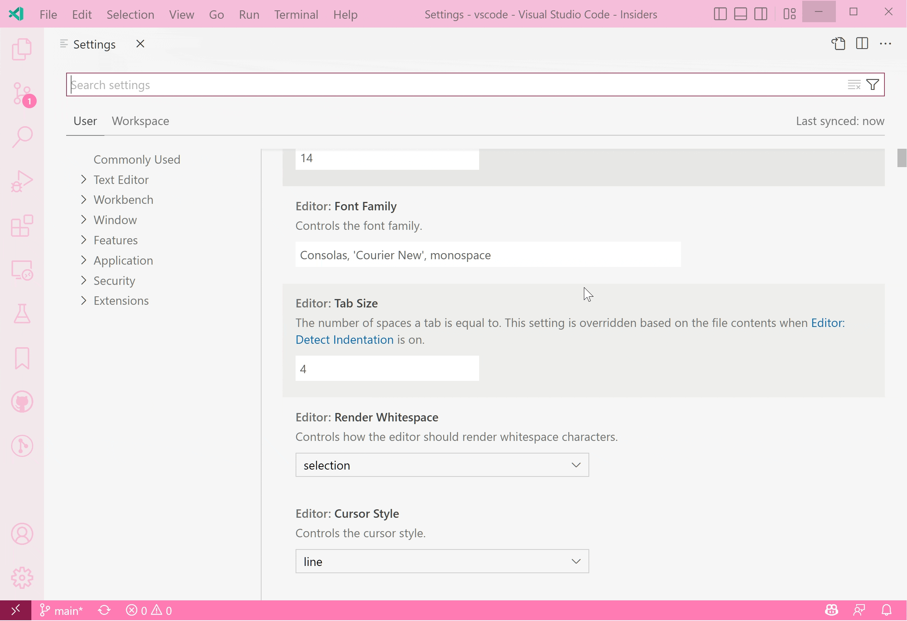
Theme: Light Pink
Comments widget primary button
The comments widget uses the primary button color for the first (rightmost) action:
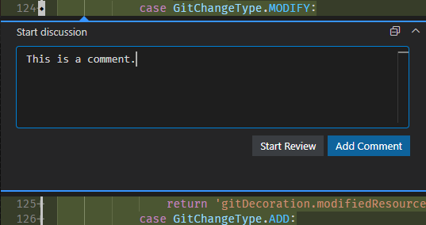
Terminal
Find match background color
Last release find in the terminal was implemented to show a border around all matches, but this was a temporary solution until support for changing the background of cells dynamically was possible. A colored background is now the default for themes when highlighting matches and the overall experience should look similar to the editor.
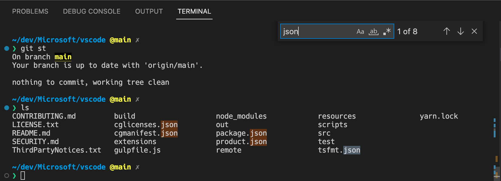
If you're a theme author that adopted terminal.findMatchBorder or terminal.findMatchHighlightBorder, we recommend migrating to terminal.findMatchBackground and terminal.findMatchHighlightBackground if that would fit the theme better or help contrast.
Improvements to contrast and the minimum contrast ratio
The find match background work added a lot more flexibility in how the terminal works with background and foreground colors. Because of this, improvements were made around contrast in the terminal, aligning the terminal visuals closer to the editor. In addition, there is now the minimum contrast ratio feature that changes the foreground of text dynamically to help with visibility.
-
Luminance will now go in the other direction if contrast isn't met. For example, if contrast isn't met for dark grey text on a lighter grey background with pure black (#_000000), the color will also try to move towards white and the value that best meets the desired contrast ratio will be used.
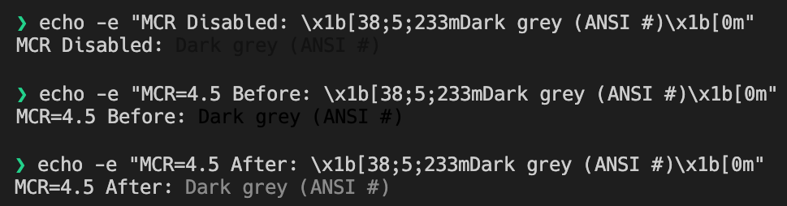
-
Selection is now drawn below the text when GPU acceleration is disabled and supports opaque colors. Previously, this had to be partially transparent and it would wash out the foreground color. Thanks to this change, the selection color now uses the same color as in the editor.
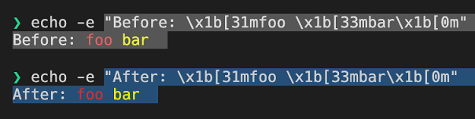
-
Nerd font symbols should now apply minimum contrast ratio to blend in with nearby text while Powerline symbols and box drawing characters will not apply minimum contrast ratio as they are often adjacent to inverted cells without any foreground characters.

-
Themes can now specify a fixed selection foreground color to be used by default in the high contrast themes.
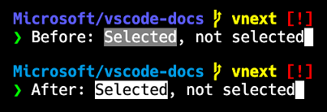
-
Several bugs were fixed to make the resulting foreground color more correct.
As a reminder, minimum contrast ratio can be disabled if you would prefer original colors by setting "terminal.integrated.minimumContrastRatio": 1.
Tasks
Glob pattern for default tasks
Default build and test tasks can now be scoped to only be "default" when the active file matches a filename glob pattern:
{
"version": "2.0.0",
"tasks": [
{
"label": "echo txt",
"type": "shell",
"command": "echo TextFile",
"group": {
"kind": "build",
"isDefault": "**.txt" // This is a glob pattern which will only match when the active file has a .txt extension.
}
},
{
"label": "echo js",
"type": "shell",
"command": "echo JavascriptFile",
"group": {
"kind": "build",
"isDefault": "**.js" // This is a glob pattern which will only match when the active file has a .js extension.
},
}
]
}
Source Control
There have been a few updates to the Git extension that align with our new pull request flow.
Git: Branch prefix
To make the process of creating a new branch smoother, there is a new setting, git.branchPrefix, that specifies a string to use as a prefix when creating a new branch.
Git: Branch name generation
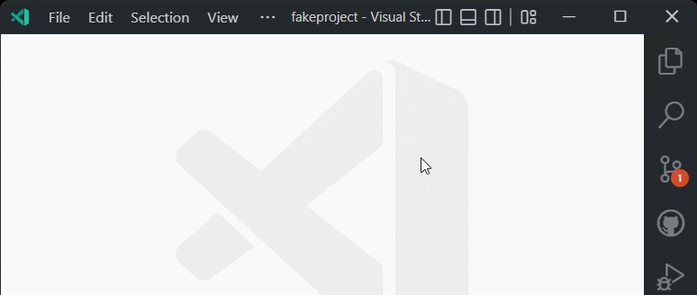
A new setting git.branchRandomName.enable will make VS Code suggest random branch names whenever creating a new branch. The random names are generated from dictionaries, which you can control via the git.branchRandomName.dictionary setting. The supported dictionaries are: adjectives (default), animals (default), colors, and numbers.
Git: Branch protection
With the new git.branchProtection setting, you can configure specific branches to be protected. VS Code will avoid committing directly on protected branches and will offer you the chance to create a new branch to commit to instead. You can fine tune this behavior with the git.branchProtectionPrompt setting.
GitHub: Pull request template support
The GitHub extension now understands pull request templates and will use them as a base whenever creating a PR from a newly forked repository.
Notebooks
Cell revealing changes
We have tuned how cells outside of the viewport are revealed in a couple scenarios.
When you click a cell in the Outline view, if that cell is outside of the viewport, the notebook will now scroll to reveal that cell at about the top 1/5th of the viewport. This matches the Outline's behavior in the text editor.
When the cursor is in a cell editor, you can move the cursor past the first or last line of the editor to move it into the next cell editor. Now, when moving the cursor into an editor whose cell is out of the viewport, the notebook will scroll just enough to reveal that line in the editor, instead of jumping up to reveal the cell in the middle of the viewport.
Find and Replace supports seeding query from cursor/selection
The Find control in notebook editor now supports seeding the search string from the editor selection. The behavior is controlled by the editor setting editor.find.seedSearchStringFromSelection.
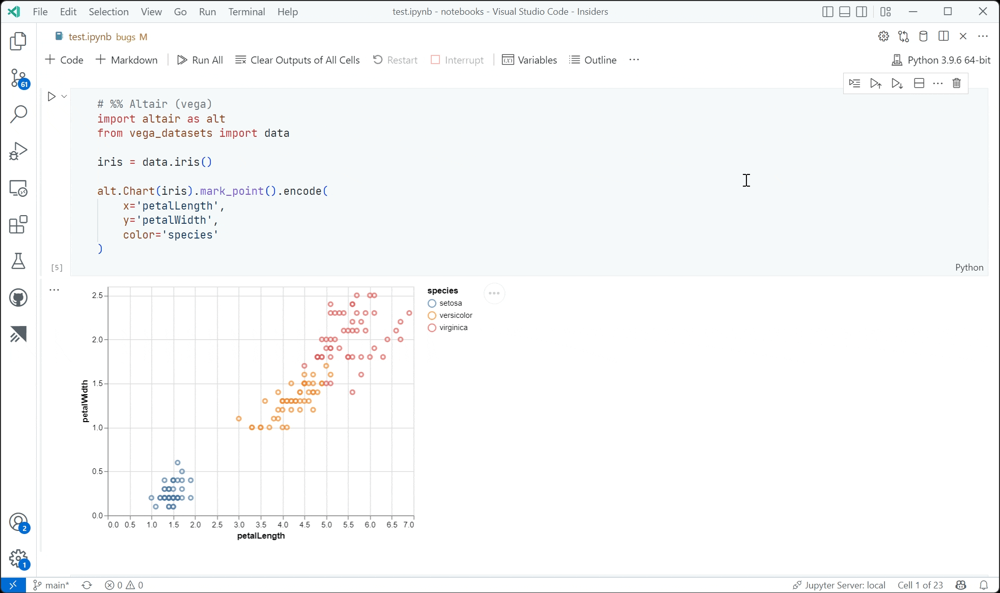
Debugging
Run and Debug without a launch.json
When you haven't set up a launch.json configuration file and press F5, or select the Run and Debug button in the Debug view, VS Code picks a debugger based on the programming language in the currently active file. If you don't have a file open, you will be asked which debugger you want to use. This experience can be a little confusing, so we've made a couple improvements.
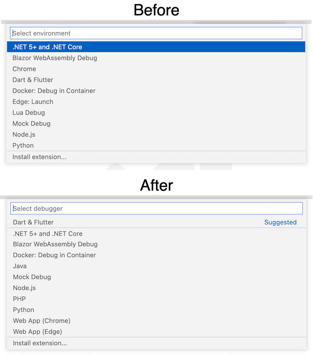
If an extension was already activated before you tried to start debugging, then that extension's debugger will be sorted to the top. This can be useful, for example, when the extension was activated by previously running a command from that extension, or opening a file of a language that activates that extension, or by a workspaceContains pattern that your workspace matches. If you have used the debugger in this session, it will also be sorted to the top.
The Chrome/Edge debuggers have been renamed to Web App (Chrome) and Web App (Edge) to try to avoid confusion with other debuggers such as the Flutter extension that also run apps in a browser.
Languages
TypeScript 4.7
VS Code now bundles TypeScript 4.7.3. This major TypeScript brings new language features including improved Control-Flow Analysis and support for ECMAScript Module Support in Node.js. It also includes new tooling features and fixes a number of important bugs!
Go to Source Definition
One of VS Code's longest standing and most upvoted feature requests is to make VS Code navigate to the JavaScript implementation of functions and symbols from external libraries. Currently, Go to Definition jumps to the type definition file (the .d.ts file) that defines the types for the target function or symbol. This is useful if you need to inspect the types or the documentation for these symbols but hides the actual implementation of the code. The current behavior also confuses many JavaScript users who may not understand the TypeScript type from the .d.ts.
While changing Go to Definition to navigate to the JavaScript implementation of a symbol may sound simple, there's a reason why this feature request has been open for so long. JavaScript (and especially the compiled JavaScript shipped by many libraries) is much more difficult to analyze than a .d.ts. Trying to analyze all the JavaScript code under node_modules would be both slow and would also dramatically increase memory usage. There are also many JavaScript patterns that the VS Code IntelliSense engine is not able to understand.
That's where the new Go to Source Definition command comes in. When you run this command from either the editor context menu or from the Command Palette, TypeScript will attempt to track down the JavaScript implementation of the symbol and navigate to it. This may take a few seconds and we may not always get the correct result, but it should be useful in many cases.
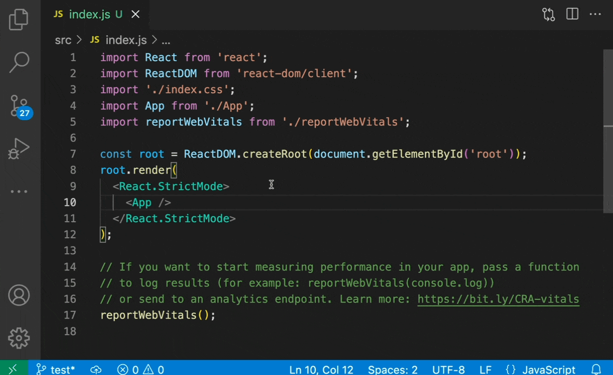
We're actively working on improving this feature so give it a try in your codebase and share your feedback.
Object method snippets
Object method snippets help you quickly add methods to object literals that implement a given interface:
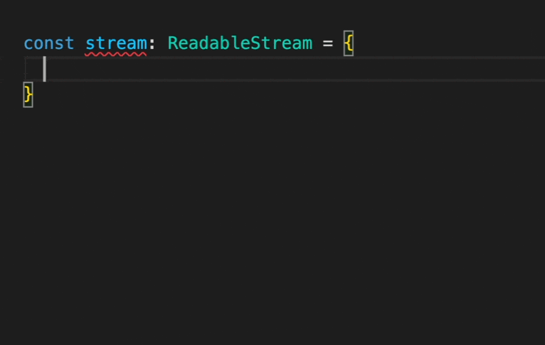
When inside an object literal, you should see two suggestions for each possible method: one that inserts just the method name and one that inserts the full signature of the method. You can also fully disable object method snippets by setting "typescript.suggest.classMemberSnippets.enabled": false or "javascript.suggest.classMemberSnippets.enabled": false.
Group aware Organize Imports
The Organize Imports command for JavaScript and TypeScript lets you quickly clean up your list of imports. When run, it both removes unused imports and also sorts the imports alphabetically.
However some codebases like having some degree of manual control over how their imports are organized. Grouping external versus internal imports is one of the most common examples of this:
// local code
import * as bbb from './bbb';
import * as ccc from './ccc';
import * as aaa from './aaa';
// built-ins
import * as path from 'path';
import * as child_process from 'child_process';
import * as fs from 'fs';
// some code...
In older versions of VS Code, running Organize Imports here would result in the following:
// local code
import * as child_process from 'child_process';
import * as fs from 'fs';
// built-ins
import * as path from 'path';
import * as aaa from './aaa';
import * as bbb from './bbb';
import * as ccc from './ccc';
// some code...
Yuck! This happens because all of the imports are being sorted alphabetically, and VS Code even tries to preserve comments and newlines while doing so.
With TypeScript 4.7 however, Organize Imports is now a group-aware. Running it on the above code looks a little bit more like what you’d expect:
// local code
import * as aaa from './aaa';
import * as bbb from './bbb';
import * as ccc from './ccc';
// built-ins
import * as child_process from 'child_process';
import * as fs from 'fs';
import * as path from 'path';
// some code...
Notice how the imports have now been sorted while still remaining within their groups. Much better!
Strict null checks enabled in implicit projects
Strict null checks are enabled in implicit projects by default for both JavaScript and TypeScript. This should result in more accurate IntelliSense and improved type checking that can catch common programming mistakes.
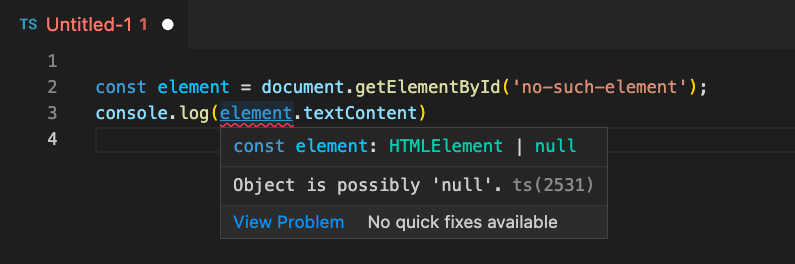
This new behavior only applies to any file that is not part of a jsconfig or tsconfig project. You can disable it by setting: "js/ts.implicitProjectConfig.strictNullChecks": false. For files that are part of a jsconfig or tsconfig, you still need to enable strict null checks in the configuration file.
Go to Definition for Markdown reference links
You can now use Go to Definition on reference links in Markdown files. This will jump from the reference to the link definition in the current file.
Expanded JSON Schema support
The built-in JSON language service has improved the support for JSON Schema Draft 2019-09 and JSON Schema Draft 2020-12. There's no longer a warning shown when such a schema is used.
There are still some features that are not fully supported. A warning is shown when they are used by a schema. The unsupported properties are:
- Subschemas with $id
- $recursiveRef/Anchor (Draft 2019-09)
- $dynamicRef/Anchor (Draft 2020-12)
VS Code for the Web
Core localization support
We've introduced the initial localization support of VS Code for the Web. VS Code is used all over the world and for many users, English is not their first language (or a language they're familiar with at all!). For years, VS Code users have been installing Language Packs from the Marketplace in order to use VS Code in a language other than English. For VS Code for the Web, we decided to take a different approach, one that is more aligned with how the web works today.
For users who set their browser to one of our core supported languages, vscode.dev will automatically apply translations in that language. The languages we support are documented in the vscode-loc repository.
For example, to configure the display language in Microsoft Edge, you would use Settings > Languages:
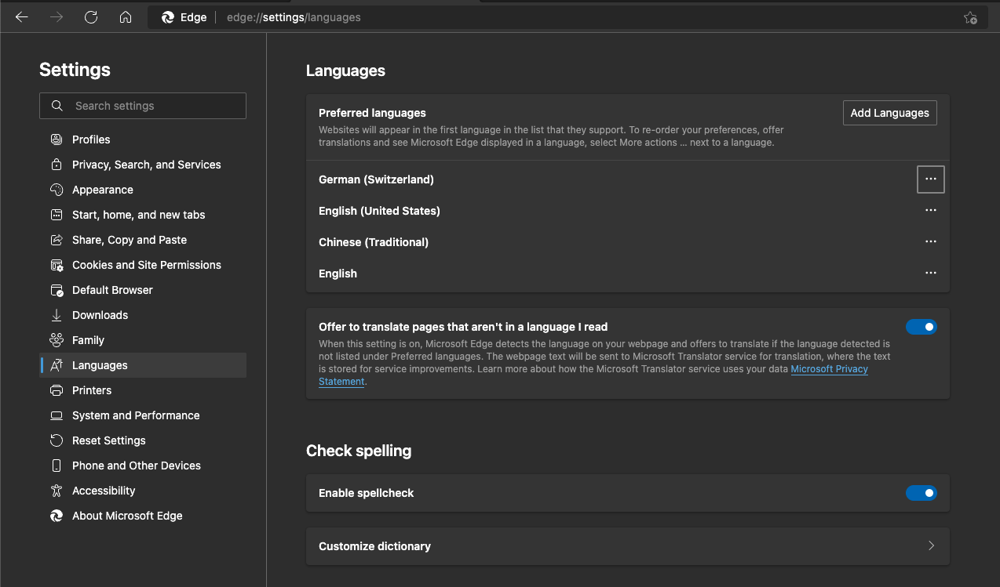
Once that is set, when you go to vscode.dev (or insiders.vscode.dev), it will be displayed in German:
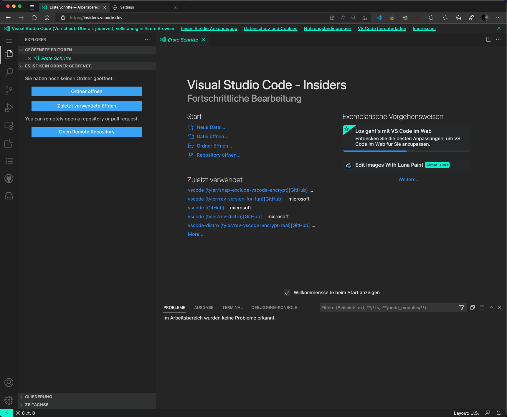
Theme: Panda Theme
In the next few months, we will enable localization for extensions (both ones that ship with VS Code and ones that don't) so that extension authors can also support non-English speaking users. Stay tuned!
Remote Repositories
When using the Remote Repositories > Continue Working On... command to clone a GitHub or Azure Repos repository locally and open it in desktop VS Code, you can now configure remoteHub.gitProtocol to always clone using http or ssh URLs.
Development Container specification
Our development container teams across Microsoft and GitHub continue active development on the new Dev Container Specification, and this iteration had several exciting highlights.
Reference implementation
We released an open source command-line interface (CLI) as the reference implementation for the specification. The CLI builds and starts a dev container from a devcontainer.json, and it can either be used directly or integrated into product experiences.
The CLI is available in a new devcontainers/cli repository. You can learn how to get started in its README, and read more in this blog post.
The CLI is under active development and will continue evolving to better support more scenarios, such as greater support for individual users. We'd love to hear your feedback along the way, so we've opened an issue specifically for feedback on the CLI and welcome additional issues and PRs in the repo.
Dev Container in CI
A GitHub Action and an Azure DevOps Task are available for running a repository's dev container in continuous integration (CI) builds. This allows you to reuse the same setup that you are using for local development to also build and test your code in CI. See the devcontainers/ci README for more details.
Example usage of the GitHub Action:
- name: Build and run dev container task
uses: devcontainers/ci@v0.2
with:
imageName: ghcr.io/example/example-devcontainer
runCmd: make ci-build
Example usage of the Azure DevOps Task:
- task: DevcontainersCI@0
inputs:
imageName: 'yourregistry.azurecr.io/example-dev-container'
runCmd: 'make ci-build'
sourceBranchFilterForPush: refs/heads/main
Specification
Active development continues on the specification, and we've published an initial version in the devcontainers/spec repository.
As with the CLI, stay tuned for further updates and progress, and we'd love to hear your feedback.
Further reading
You can read all about development containers and the specification at https://containers.dev.
Contributions to extensions
Python
No interpreter discovery at startup
The Python extension now auto-triggers discovery only when:
- Using Python: Select Interpreter command to choose a different interpreter.
- A particular scope (workspace or global) is opened for the first time.
- No Python is installed.
Since discovery isn't triggered automatically at startup, this leads to instantaneous load, and faster startup of other features like the language server. However, if the Jupyter extension is installed/enabled, discovery is still triggered by Jupyter at startup.
Enable localization
The Python extension now supports translations in all the languages that VS Code supports. We have updated the way we get the translations of our commands, notifications, titles, etc. using vscode-nls. These translations are maintained by a localization team to ensure that they are up to date and correct.
Jupyter
Web extension
We've made progress on supporting more of the core functionality in the web version of the Jupyter extension.
This month the following features were ported to the web extension:
- https support
- kernel completions
- ipywidgets
- notebook debugging
- variable viewing
- exporting
- interactive window
If you'd like to experiment with the functionality, launch Jupyter from your local machine with:
jupyter notebook --no-browser --NotebookApp.allow_origin_pat=https://.*\.vscode-cdn\.net
And then connect to it using the command Jupyter: Specify Jupyter server for connections from within vscode.dev.
For more information (and to comment), see this discussion item.
Remote Development
Work continues on the Remote Development extensions, which allow you to use a container, remote machine, or the Windows Subsystem for Linux (WSL) as a full-featured development environment.
You can learn about new extension features and bug fixes in the Remote Development release notes.
GitHub Pull Requests and Issues
There has been more progress on the GitHub Pull Requests and Issues extension, which allows you to work on, create, and manage pull requests and issues. Highlights of this release include:
- Auto-merge checkbox in Create Pull Request view
Check out the changelog for the 0.44.0 release of the extension to see the other highlights.
Remote Repositories extensions
Both the GitHub Repositories and Azure Repos extensions support translations in all languages that VS Code supports.
Preview features
Markdown link validation
While working with Markdown, it's easy to mistakenly add an invalid file link or image reference. Perhaps you forgot that the filename used a - (dash) instead of an _ (underline), or perhaps the file you are linking to was moved to a different directory. Often you only catch these mistakes after viewing the Markdown preview or even after publishing. VS Code's new experimental Markdown link validation can help catch these mistakes.
With link validation, VS Code will analyze Markdown links to headers, images, and other local files. Invalid links will be reported as either warnings or errors.
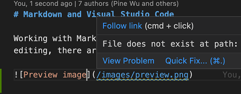
VS Code can even catch invalid links to specific headers in other Markdown files!
Link validation is off by default. You can try link validation by setting "markdown.experimental.validate.enabled": true.
There are a few settings you can use to customize link validation:
-
markdown.experimental.validate.fileLinks.enabled- Enable/disable validation of links to local files:[link](/path/to/file.md) -
markdown.experimental.validate.headerLinks.enabled- Enable/disable validation of links to headers in the current file:[link](#_some-header) -
markdown.experimental.validate.referenceLinks.enabled- Enable/disable validation of reference links:[link][ref]. -
markdown.experimental.validate.ignoreLinks- A list of links that skip validation. This is useful if you link to files that don't exist on disk but do exist once the Markdown has been published.
Let us know what you think of the new feature!
Paste files to insert Markdown links
We've added experimental support for pasting to insert images or file links in Markdown.
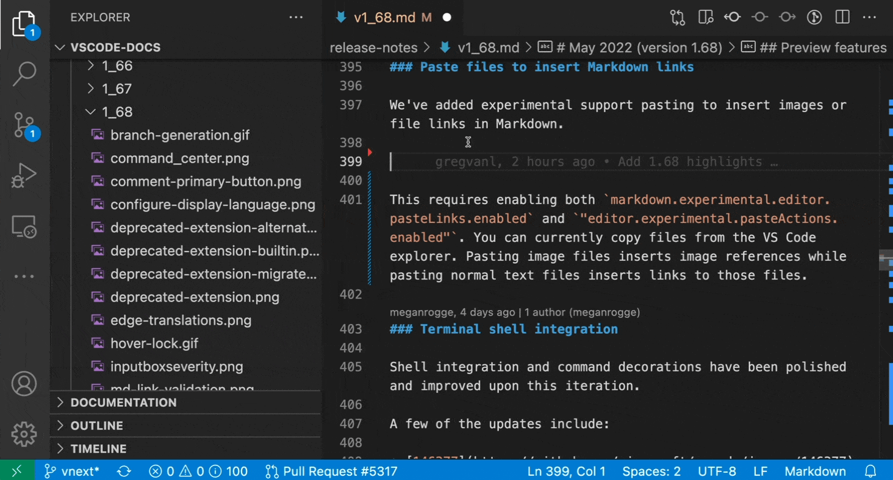
This requires enabling both markdown.experimental.editor.pasteLinks.enabled and "editor.experimental.pasteActions.enabled". You can currently copy files from the VS Code File Explorer. Pasting image files inserts image references while pasting normal text files inserts links to those files.
Terminal shell integration
Shell integration (enabled with the terminal.integrated.shellIntegration.enabled setting) and command decorations have been polished and improved upon this iteration.
A few of the updates include:
- 146377 Persist shell status such that
bash-git-promptand other programs work - 148635 Allow the use of a custom
ZDOTDIRforzsh - 145801 Fix decorations getting out of sync on slower machines
- 146873 Improve handling of existing debug traps in
bash - 148839 Polish messaging with How does this work? command and activation status in the tab hover
- 151223 After buffer clear, ensure commands are tracked correctly
Window Controls Overlay on Windows
We've adopted the API provided by Electron to support Window Controls Overlay on Windows. The major user-facing benefit of this change is access to the Snap Layouts feature in Windows 11. Due to some persistent issues, the Window Controls Overlay is off by default, but you can turn them on with the experimental setting window.experimental.windowControlsOverlay.enabled.
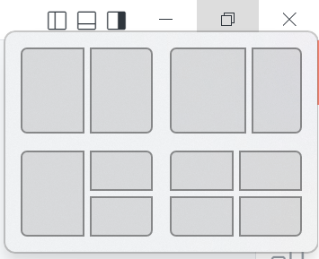
Command Center
We are adding Command Center - a simpler way to trigger Quick Pick for files, commands, and more.
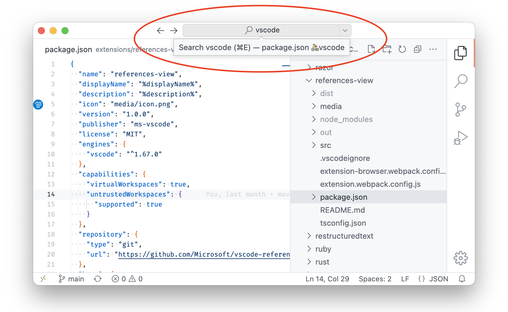
This can be enabled via the window.experimental.commandCenter setting and let us know what you think.
Merge editor
We have started to work on a better merge experience. It is still early days and we aren't yet ready for feedback but you can give it a try via git.experimental.mergeEditor. With this enabled, files with merge conflicts open in a new merge editor to make resolving conflicts simpler.
We will continue to work on this. Use Insiders to follow our progress. We would like to sincerely thank Mingpan and our friends at Google who are helping us with this effort. ❤️
Extension authoring
Inline Completions Finalization
We have finalized the Inline Completions API. This allows extensions to provide inline completions that are decoupled from the suggestion widget. An inline completion is rendered as if it was already accepted, but with a gray color. Users can cycle through suggestions and accept them with the Tab key. An example extension that uses Inline Completions is GitHub Copilot. More information can be found in the vscode.d.ts file with the entrypoint into the API being languages.registerInlineCompletionItemProvider.
InputBox validation message severity finalization
Our InputBox APIs (via window.showInputBox and window.createInputBox) to provide severity in validation of user's input has been finalized.
For example, if you wanted to show the user an information message based on their input, your validation message can return:
{
message: 'this is an info message';
severity: InputBoxValidationSeverity.Info;
}
which would look like this:
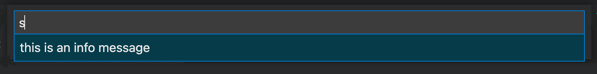
Notebook Editor API
The new notebook editor API introduces a new NotebookEditor type that is similar to TextEditor but for notebooks instead of normal text editors.
const editor = vscode.window.activeNotebookEditor;
if (editor) {
// Access the underlying notebook document associated with the editor
console.log(editor.notebook.uri);
// Change the selection in the current notebook
editor.selection = new vscode.NotebookRange(1, 3);
}
You can use window.activeNotebookEditor to get the current notebook editor and events such as window.onDidChangeActiveNotebookEditor to observe when the user switches to the new notebook editor.
Extension activation based on Timeline view
A new activation event has been added for when the Timeline view is visible. This event onView:timeline can be used by any extension but is most useful to extensions implementing the proposed Timeline API.
UX Guidelines
The UX Guidelines for extension authors has been updated and expanded to cover more VS Code user interface elements.
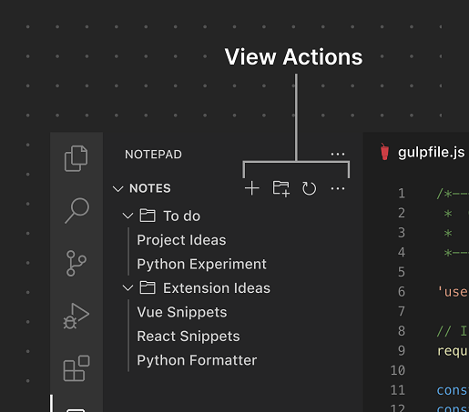
A revised Overview page steps through the VS Code UI to give a visual tour of the interface and common UI elements.
Links to relevant guides, API references, and extension samples have been added to each area's dedicated page. Additionally, all example images have been updated across the guidelines to showcase an up-to-date version of the UI.
You can now read about the recommended Do's and Don't's for extensions that add to or contribute these UI elements:
Extension sponsorship
In this milestone, we have introduced a sponsor field in the extension's package.json to allow extensions to opt into sponsorship. The sponsor object has a url field for the extension author's sponsorship link. For example:
"sponsor": {
"url": "https://github.com/sponsors/nvaccess"
}
If an extension opts-in to this, VS Code will render a Sponsor button in the Extensions view Details page as shown in the Sponsoring extensions section above.
Note: Make sure to use the latest vsce command line tool (>=2.9.1) to publish your extension with sponsorship enabled.
Proposed APIs
Every milestone comes with new proposed APIs and extension authors can try them out. As always, we want your feedback. Here are the steps to try out a proposed API:
- Find a proposal that you want to try and add its name to
package.json#enabledApiProposals. - Use the latest vscode-dts and run
vscode-dts dev. It will download the correspondingd.tsfiles into your workspace. - You can now program against the proposal.
You cannot publish an extension that uses a proposed API. There may be breaking changes in the next release and we never want to break existing extensions.
Read files from DataTransfer
The new dataTransferFiles API proposal lets extensions read files from a vscode.DataTransfer object. The DataTransfer type is used by the tree drag and drop API, as well as the drop into editor and copy paste API proposals.
export class TestViewDragAndDrop implements vscode.TreeDataProvider<Node>, vscode.TreeDragAndDropController<Node> {
...
public async handleDrop(target: Node | undefined, sources: vscode.DataTransfer, token: vscode.CancellationToken): Promise<void> {
// Get a list of all files
const files: vscode.DataTransferFile[] = [];
sources.forEach((item) => {
const file = item.asFile();
if (file) {
files.push(file);
}
});
const decoder = new TextDecoder();
// Print out the names and first 100 characters of the file
for (const file of files) {
const data = await file.data();
const text = decoder.decode(data);
const fileContentsPreview = text.slice(0, 100);
console.log(file.name + ' — ' + fileContentsPreview + '\n');
}
...
}
}
Files data transfer items are currently only added to the DataTransfer when they come from outside of VS Code (such as when you drag and drop from the desktop into a tree view or into the editor).
Copy paste API
The new documentPaste API proposal lets extensions hook into copy and paste inside text editors. This can be used to modify the text that is inserted on paste. Your extension can also store metadata when copying text and use this metadata when pasting (for example, to bring along imports when pasting between two code files).
The document paste extension sample shows this API in action:
/**
* Provider that maintains a count of the number of times it has copied text.
*/
class CopyCountPasteEditProvider implements vscode.DocumentPasteEditProvider {
private readonly countMimeTypes = 'application/vnd.code.copydemo-copy-count';
private count = 0;
prepareDocumentPaste(
_document: vscode.TextDocument,
_range: vscode.Range,
dataTransfer: vscode.DataTransfer,
_token: vscode.CancellationToken
): void | Thenable<void> {
dataTransfer.set(this.countMimeTypes, new vscode.DataTransferItem(this.count++));
}
async provideDocumentPasteEdits(
_document: vscode.TextDocument,
range: vscode.Range,
dataTransfer: vscode.DataTransfer,
token: vscode.CancellationToken
) {
const countDataTransferItem = dataTransfer.get(this.countMimeTypes);
if (!countDataTransferItem) {
return undefined;
}
const textDataTransferItem = dataTransfer.get('text/plain') ?? dataTransfer.get('text');
if (!textDataTransferItem) {
return undefined;
}
const count = await countDataTransferItem.asString();
const text = await textDataTransferItem.asString();
// Build a snippet to insert
const snippet = new vscode.SnippetString();
snippet.appendText(`(copy #${count}) ${text}`);
return new vscode.SnippetTextEdit(range, snippet);
}
}
vscode.languages.registerDocumentPasteEditProvider(
{ language: 'markdown' },
new CopyCountPasteEditProvider()
);
New Notebook Workspace edit proposal
The new notebookWorkspaceEdit API proposal allows extensions to edit the contents of a notebook. It replaces the previous notebookEditorEdit proposal.
With the proposal, you can create workspace edits that insert, replace, or modify cells in a notebook:
const currentNotebook = vscode.window.activeNotebookEditor?.notebook;
if (currentNotebook) {
const edit = new vscode.WorkspaceEdit();
edit.set(
currentNotebook.uri,
vscode.NotebookEdit.insertCells(/* index*/ 1, [
// ... new notebook cell data
])
);
await vscode.workspace.applyEdit(edit);
}
Engineering
Using pull requests
We have moved away from pushing changes directly to the vscode repository main branch and are now pushing all changes to VS Code exclusively using pull requests (PR). We require that each PR gets at least one approval from another team member. Taking advantage of this, we now also require that some basic checks pass before a PR can be merged. These are tasks like TypeScript compilation, formatting rules, unit tests and integration tests, which typically don't take longer than 10 minutes. Switching to this flow has reduced the number of times our Insiders build was broken due to a programming mistake.
VS Code OSS build
We have a new public Code OSS build that is reusing the same build definitions as our production builds. This build now runs in under 30 minutes on each PR and we plan to continue investing in speeding it up.
Documentation
Updated version control video
The Using Git with Visual Studio introductory video has been redone to help you get started using the Git integration built into VS Code.
You can also find other great videos on the VS Code YouTube channel.
vscode.dev on code.visualstudio.com
Want to use VS Code for the Web but forgot the URL? vscode.dev is now displayed prominently on the VS Code Download page so you can quickly start VS Code running in your browser.
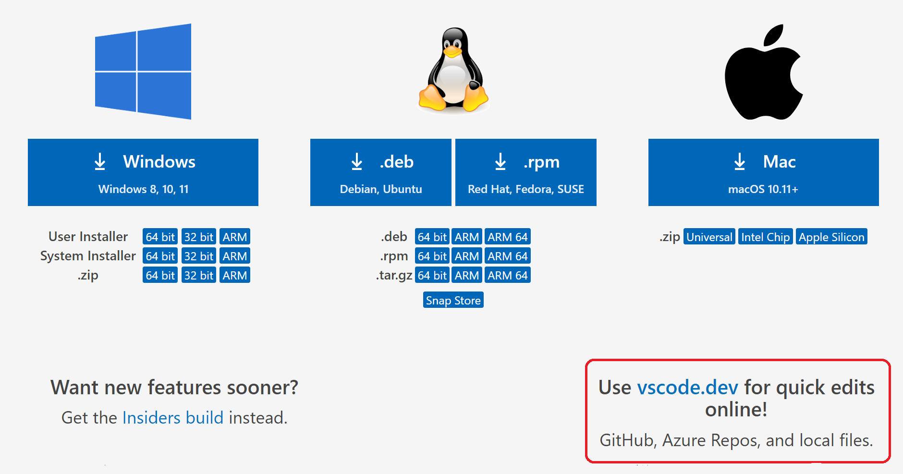
Notable fixes
- 141157 Clicking F11 while not in debug mode turns on debug instead of going full screen
- 148864 Unbound breakpoint for TypeScript files
- 149638 Lazy variable evaluation button causes problematic gaps and misalignments between nodes
Thank you
Last but certainly not least, a big Thank You to the contributors of VS Code.
Web extensions
Extension authors for enabling extensions that run code as web extensions (the list below is between May 2 and June 6, 2022):
- Pipeline Editor (Alexey Volkov)
- Markdown Base64 Image ID (amoxuk)
- Apache Daffodil VS Code Extension (Apache Software Foundation)
- Web Search (Ben Rogers)
- CloudStudio.coding (CloudStudio)
- Screenshot Clipboard (Darren Daniel Day)
- Galaxy Workflows (davelopez)
- React Snippets (dotkiro)
- Draw (hall)
- Blogging tool (Huka)
- Katalon Runner (Katalon Studioz)
- zzzGCS-Uploader (KillerBees)
- WhatTheCommit (Lasse Gaardsholt)
- TEI Japanese Editor (ldas)
- TypeScript Error Translator (Matt Pocock)
- Mintlify (Mintlify)
- Play DJMAX (minwook-shin)
- Sciter JS (MustafaHi)
- NewWeb (newsearchwebtesting)
- Loop Development Kit (Olive AI)
- Chewbacca (Otter)
- Grammarly (Rahul Kadyan)
- Reflame (Reflame)
- SAS (SAS Institute Inc.)
- vscode-solidity (sevillal)
- Slint (Nightly) (Slint)
- Markdown Images (Steven Gourley)
- Smart Sort (Suguru Yamamoto)
- fiber-ifttt-starlark (t-codespaces)
- Markdown Preview Style (Beta) (TakumiI)
- TATEditor for VS Code (TATEditor)
- kodeine (tored)
- Vue Language Features (Volar) (Vue)
- Watermelon (WatermelonTools)
- todoist (Waymondo)
- Arrange Selection (Wupb)
- Transient Emacs (yasuyuky)
- Go to Next Error (yy0931)
- Extra Commands (zardoy)
Issue tracking
Contributions to our issue tracking:
- John Murray (@gjsjohnmurray)
- Andrii Dieiev (@IllusionMH)
- ArturoDent (@ArturoDent)
- Simon Chan (@yume-chan)
Pull requests
Contributions to vscode:
- @a-stewart (Anthony Stewart): Workaround for the webview positioning bug PR #137506
- @aifreedom (Song Xie)
- Format date strings with the right locale PR #150133
- Fix a typo for "synchronizing" in log string PR #150236
- @AlbertHilb: Pass one shared
macrosobject into every call to katex renderer PR #148006 - @andrewbranch (Andrew Branch)
- [typescript-language-features] Add
flagsto completions telemetry PR #148313 - [typescript-language-features] No commit characters for string completions PR #148597
- [typescript-language-features] Add
- @bl-nero (Bartosz Leper): Fix infinite loop in the disassembly view PR #148556
- @CGNonofr (Loïc Mangeonjean)
- Add high contrast light theme on monaco editor PR #148249
- Add editor monitoring methods in monaco api PR #148777
- @dlech (David Lechner): allow null in ICodeEditor.restoreViewState() PR #146866
- @eugenesimakin (Eugene): Inherit editor.letterSpacing for suggest widget (fixes #125622) PR #148283
- @gjsjohnmurray (John Murray): Add "Open Containing Folder" etc to file context menu in Git SCM view PR #149150
- @holazz (zz): Add "pnpm-lock.yaml" to the child patterns of "package.json" PR #146869
- @ilumer (ilumer): fix build/npm/preinstall.js node version check PR #150547
- @jasonwilliams (Jason Williams): Enable globs on tasks otherwise fallback to default - fixes #88106 PR #141230
- @jeanp413 (Jean Pierre)
- Enable go to definition for markdown links PR #148017
- Fixes terminal split width is not persisted if not focused within exit PR #149594
- @justanotheranonymoususer: Add extension output label to url PR #150065
- @Lazyuki: Check maxTokenizationLineLength in monarchLexer PR #145979
- @Long0x0: Fix incorrect ligatures when rendering whitespaces PR #150349
- @MachineMitch21 (Mitch Schutt): Editor Drop Target debug threshold square cleanup PR #149570
- @Mingpan: [Unpolished prototype] 3 way merge for Git PR #150388
- @PF4Public: Changing dependency syntax in extensions/markdown-math PR #149501
- @pksunkara (Pavan Kumar Sunkara): feat: inlay hints displayStyle PR #150118
- @prashantvc (Prashant Cholachagudda): Added extension search text length to telemetry PR #148785
- @quanzhuo (Quan Zhuo): Add newpromise snippets in javascript PR #148755
- @r3m0t (Tomer Chachamu): Fix access token coming from wrong provider PR #150473
- @Raymo111 (Raymond Li): Fix typo PR #149509
- @remcohaszing (Remco Haszing): Specify tsconfig.tsbuildinfo is json PR #149065
- @robinkar (Robin Karlsson): Accept capitalization in HTTP upgrade header in web PR #150961
- @roj1512 (Roj): Handle multiline commit messages when creating PR PR #149426
- @ShenHongFei (沈鸿飞): In addition to WebviewPanel, let WebviewView also support transferring of TypedArrays PR #148429
- @susiwen8 (susiwen8): fix: close
create forkmessage will create fork PR #148438 - @weartist (Han): fix #130527 PR #146710
- @wkillerud (William Killerud): Add onEnterRule for SassDoc documentation PR #150599
- @yhatt (Yuki Hattori): Fixes #147936 PR #148503
Contributions to vscode-extension-samples:
- @KamasamaK: Remove unused enableProposedApi PR #609
Contributions to vscode-generator-code:
- @segevfiner (Segev Finer): Remove $tslint-webpack-watch from vscode-webpack template PR #346
Contributions to vscode-html-languageservice:
- @hahn-kev (Kevin Hahn): Allow void elements to be specified in data provider PR #125
Contributions to vscode-js-debug:
- @ashgti (John Harrison): Adding support for indexed source maps. PR #1261
Contributions to vscode-languageserver-node:
- @d-biehl (Daniel Biehl): cleanup diagnostics in DiagnosticRequestor PR #976
- @DanTup (Danny Tuppeny)
- @heejaechang (Heejae Chang): make sure to unsubscribe from file events PR #929
- @Vtec234 (Wojciech Nawrocki): fix: return
falsewhenshowDocumentfails PR #951
Contributions to vscode-pull-request-github:
- @jpspringall: Issue #3371 | Updated getAuthSessionOptions in case of GitHub Enterprise AuthProvider PR #3565
Contributions to debug-adapter-protocol:
- @apupier (Aurélien Pupier)
- @lemmy (Markus Alexander Kuppe): Add TLA+ to the list of debug-adapter-protocols PR #267
Contributions to language-server-protocol:
- @asashour (Ahmed Ashour)
- @KamasamaK
- @michaelmesser (Michael Messer): Update latest version in index.html PR #1478
- @pedro-w (Peter Hull): Add newline to end of file PR #1486